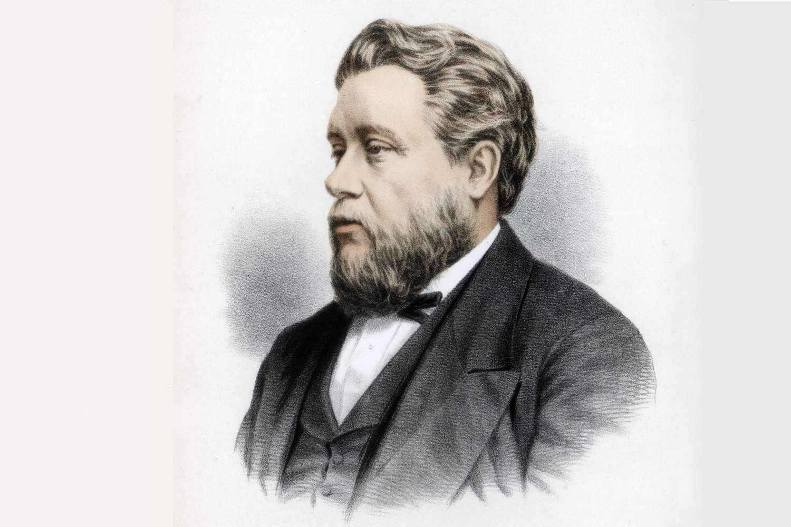
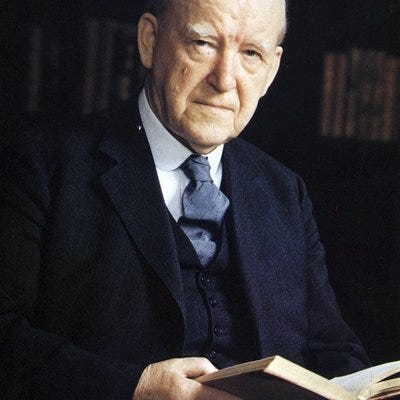

Fundamento bíblico
El sistema detallado de sacrificios instituido en el Pentateuco y su significado profético en el plan de salvación.
Cumplimiento en Cristo
Cómo cada sacrificio encuentra su realización perfecta en la obra expiatoria de Jesucristo en la cruz.
Hermenéutica tipológica
Los principios correctos de interpretación tipológica desde una perspectiva protestante evangélica.
Aplicación pastoral
Las implicaciones doctrinales y pastorales de esta enseñanza para la vida de la iglesia y el creyente.
Sistema sacrificial del Antiguo Testamento
Cada sacrificio revelaba un aspecto específico de la obra redentora que Cristo cumpliría perfectamente en la cruz.
El holocausto
El holocausto (heb. olah, "lo que asciende") era una ofrenda totalmente consumida por el fuego, simbolizando la entrega total y la propiciación perfecta.
Prefigura a Cristo en su entrega absoluta al Padre y su carácter de sacrificio propiciatorio aceptable. La completa consunción simbolizaba dedicación total a Dios.
La ofrenda vegetal
Compuesta de harina fina, aceite e incienso, sin levadura ni miel. Representaba la vida perfecta sin corrupción, ofrecida como tributo de gratitud.
Prefigura a Cristo en su humanidad perfecta y su ofrecimiento como pan de vida. La ausencia de levadura apunta a la vida sin pecado de Cristo.
El sacrificio de paz
Una comida sagrada compartida entre Dios, el sacerdote y el oferente, simbolizando la paz y comunión restaurada.
Tipifica a Cristo como nuestro pacificador y mediador de comunión, quien nos reconcilió con el Padre mediante su sangre.
Sacrificio por el pecado
Ofrenda expiatoria para pecados involuntarios, donde el inocente cargaba con la culpa de otros mediante la imposición de manos.
El tipo más claro de la muerte expiatoria de Cristo como nuestro sustituto penal, llevando nuestros pecados en su cuerpo.
Ofrenda por la culpa
Sacrificio de restitución que requería no solo la ofrenda, sino también la reparación del daño más un 20% adicional.
Prefigura a Cristo como quien satisface completamente las deudas del pecado y restaura lo que fue quebrantado.
"Es imposible que la sangre de toros y de machos cabríos quite los pecados. Por lo tanto, al entrar en el mundo dice: Sacrificio y ofrenda no quisiste; mas me preparaste cuerpo."
Hebreos 10:4-5
Autores y fuentes protestantes
Grandes teólogos que han estudiado y enseñado sobre la tipología sacrificial desde la Reforma.
Gino Iafrancesco
Teólogo evangélico contemporáneo que enfatiza la revelación progresiva en la Escritura y la centralidad de Cristo en las tipologías bíblicas.
John Owen
Teólogo puritano (1616-1683) que profundizó en la epístola a los Hebreos y la doctrina de la expiación perfecta de Cristo.

Charles Spurgeon
"El príncipe de los predicadores" (1834-1892), cuya predicación está llena de ilustraciones de la tipología bíblica con el fin de exaltar a Cristo.

D. Martyn Lloyd-Jones
Predicador galés (1899-1981) que resaltó la obra completa de Cristo prefigurada en el Antiguo Testamento.
Contribuciones principales
"La repetición de los sacrificios anuales bajo la ley se debía principalmente a que no podían efectuar perfectamente aquello que significaban; pero el único sacrificio de Cristo, de una vez, logró perfectamente lo que ellos representaban."
Respecto a Hebreos 9-10
"Cristo se ofreció voluntariamente, sin mancha, a Dios por nuestros pecados."
Resumió el significado cristológico de cada ofrenda levítica. Del holocausto dijo lo anterior. De la ofrenda de cereal: "Cristo en su humanidad perfecta, probada y acrisolada, se convierte en el pan de su pueblo."
"Dios prometió [la redención] en la antigua dispensación; nos dio tipos y sombras, todas las ceremonias del sacerdocio levítico. Pero Dios dijo: 'Voy a ofrecer un sacrificio perfecto, y cuando Él venga, el pecado será enteramente perdonado.'"
Ley y gracia, sustitución penal y justificación
Desde la Reforma protestante, una reinterpretación de los sacrificios que enfatiza la suficiencia de Cristo.
Sacrificios como parte de la ley ceremonial
Los reformadores enseñaron que la ley tenía distintas partes: la ley moral (diez mandamientos), la ley civil (para gobernar Israel) y la ley ceremonial (ritos religiosos). Esta última fue considerada sombra temporal cumplida en Cristo y abrogada en la era del nuevo pacto.
La sustitución penal
Central en la teología reformada es que Cristo murió en lugar de pecadores, llevando la pena de su pecado. Los sacrificios del Antiguo Testamento ilustraban la transferencia de culpa al sustituto inocente. Calvino destacó que Cristo tomó sobre sí el juicio que nos tocaba.
La justificación por la fe
Puesto que Cristo pagó totalmente por el pecado y cumplió toda justicia, el pecador es justificado (declarado justo) únicamente al confiar en Cristo. Los reformadores usaron mucho Hebreos para apoyar solus Christus y sola fide.
Ley y gracia
Los reformadores vieron una unidad en la diversidad: la gracia de Cristo operó bajo la ley pero velada. Los santos del Antiguo Testamento tenían a Cristo "en figura", pero con la venida de Cristo se entra en la plenitud y libertad evangélica.
Hermenéutica tipológica protestante
Criterios sólidos para una interpretación tipológica responsable, evitando arbitrariedades.
Tipo vs. alegoría
Un tipo bíblico es una persona, institución, objeto o evento real en el Antiguo Testamento, ordenado por la providencia divina para prefigurar una realidad futura mayor en Cristo o el evangelio.
En cambio, una alegoría es una interpretación donde los detalles históricos se transforman simbólicamente sin base explícita. La Reforma reaccionó contra la tendencia medieval de alegorizar cada pormenor sin control.
Cumplimiento en Cristo
Para que algo sea un tipo legítimo, su cumplimiento (antitipo) se halla en Cristo y la era del nuevo pacto. Los tipos no son meras correspondencias éticas, sino conexiones teológicas en la historia de la salvación.
Un principio seguido es: "El Nuevo Testamento es la guía para entender los tipos del Antiguo Testamento." Siempre que el Nuevo Testamento identifica un tipo, tenemos plena certeza de esa tipología.
Correspondencia y escalamiento
Un tipo y su antitipo tienen analogías pero también diferencias. Generalmente, el antitipo es mayor que el tipo. Así el sacrificio de Cristo es infinitamente superior a los de toros y machos cabríos.
El intérprete tipológico busca la idea principal que conecta ambas realidades: por ejemplo, la expiación sustitutiva conecta el sacrificio por el pecado con Cristo.
La hermenéutica tipológica protestante trata la Escritura como una unidad centrada en Cristo. No rehúye ver a Cristo en el Antiguo Testamento, pero lo hace con reverencia al sentido bíblico, evitando fantasías privadas. Un pasaje importante es Lucas 24:27, donde Jesús interpretó "en todas las Escrituras lo que de él decían": esto establece el modelo a seguir.
Rechazo de la perspectiva católica romana
Sacrificio único frente a repetición sacramental.
Perspectiva protestante
- "Una vez para siempre": el sacrificio único e irrepetible de Cristo
- La Cena del Señor es memorial, no acto sacrificial propiciatorio
- Énfasis en el sacerdocio de todos los creyentes
- La suficiencia completa de la expiación de Cristo
- Hebreos 10:18: "Donde hay remisión de pecados, no hay más ofrenda por el pecado"
Perspectiva católica romana
- La misa como un "verdadero y propio sacrificio" con valor propiciatorio
- Repetición o aplicación continua del sacrificio
- Sacerdocio sacrificial específico
- Doctrinas del purgatorio y méritos
- Aplicación gradual de los beneficios de Cristo
La Confesión de Westminster (1647) rechaza "el llamado sacrificio de la misa" como "contrario a la Escritura", afirmando que el único sacrificio de Cristo ya completó perfectamente la obra de expiación y reconciliación. Juan Wesley, aunque metodista arminiano, concordaba: "Cuya única oblación tiene virtud para siempre".
El Cordero de Dios: síntesis tipológica
Por encima de cada categoría específica, la Biblia presenta una figura global: el Cordero de Dios.
El Cordero Pascual
El cordero pascual (Éxodo 12) es una figura directa de Cristo, "nuestra Pascua, que ya fue sacrificada por nosotros" (1 Corintios 5:7). Al igual que su sangre protegió de la muerte y aseguró la liberación de la esclavitud, la sangre de Cristo nos libra de la muerte eterna y de la esclavitud del pecado.
Cristo fue crucificado en el tiempo de la Pascua, cumpliendo el tipo con precisión divina. Juan el Bautista, al ver a Jesús, exclamó: "¡He aquí el Cordero de Dios, que quita el pecado del mundo!" (Juan 1:29).
El holocausto: entrega total
Jesús se entregó completamente en obediencia hasta la muerte (Filipenses 2:8). Su perfecta obediencia y disposición a hacer la voluntad del Padre, incluso al costo total de sí mismo, reflejan la esencia del holocausto.
"Yo pongo mi vida, para volverla a tomar. Nadie me la quita, sino que yo de mí mismo la pongo." Juan 10:17-18
Ofrenda de cereal: vida sin pecado
La ausencia de sangre en esta ofrenda indica que en sí misma no expiaba pecados; de igual modo, la vida perfecta de Cristo por sí sola no nos salva sin la cruz, pero era necesaria para que él fuera un sacrificio sin mancha.
"Cristo es como ese pan sin levadura, sincero y verdadero." 1 Corintios 5:7-8
Sacrificio de paz: comunión restaurada
En la Última Cena, Jesús instituyó una comida basada en su sacrificio, reflejando el lenguaje de un sacrificio de paz: la iglesia come de los beneficios de la muerte de Cristo en comunión con Dios y entre los hermanos.
"Por su sangre, Cristo hizo la paz mediante la sangre de su cruz." Colosenses 1:20
Sacrificio por el pecado: sustitución
Cristo fue crucificado "fuera de la puerta" de Jerusalén (Hebreos 13:12), cargando con la maldición (Gálatas 3:13) y experimentando la separación de la comunión para llevar nuestro pecado fuera de la presencia de Dios.
"Llevó él mismo nuestros pecados en su cuerpo sobre el madero." 1 Pedro 2:24
Ofrenda por la culpa: satisfacción total
Cristo, al morir, no solo trató nuestro pecado en términos de culpabilidad ante Dios, sino también pagó totalmente nuestra deuda moral. Colosenses 2:14 declara que Dios "anuló el acta de los decretos que había contra nosotros".
"Vino para dar su vida en rescate por muchos." Marcos 10:45
"De manera que la ley ha sido nuestro ayo, para llevarnos a Cristo, a fin de que fuésemos justificados por la fe. Pero venida la fe, ya no estamos bajo ayo."
Gálatas 3:24-25
Referencias bibliográficas
Fuentes teológicas y académicas que sustentan este estudio.
Diccionarios y enciclopedias
- Baker's Evangelical Dictionary of Biblical Theology: "Offerings and Sacrifices" (1996)
- Escuelabíblica.com, estudio Levítico 1-7: explicación de las ofrendas y su relación con Efesios 5
Teólogos reformados clásicos
- Owen, John. Exposición de Hebreos, vol. VI: sobre la suficiencia del sacrificio de Cristo
- Calvino, Juan. Comentario a Hebreos e Institución de la Religión Cristiana II.7: Cristo "fin de la ley"
- Lutero, Martín. Artículos de Esmalcalda (1537): denuncia de la misa como contraria al único sacrificio
Predicadores y pastores
- Spurgeon, C. H. Lectures to my Students / comentario devocional en Levítico: resumen tipológico
- Lloyd-Jones, D. M. Vida en Cristo (estudios en 1 Juan): sobre los tipos levíticos como promesas
- Wesley, John. Notas explicativas (Hebreos 10): énfasis en "la virtud de cuyo único sacrificio"
Teología sistemática moderna
- Berkhof, Louis. Systematic Theology (1938): capítulos sobre la obra de Cristo y tipología bíblica
- Sproul, R. C. The Truth of the Cross (2007): enseñanza sobre la expiación "una vez y para siempre"